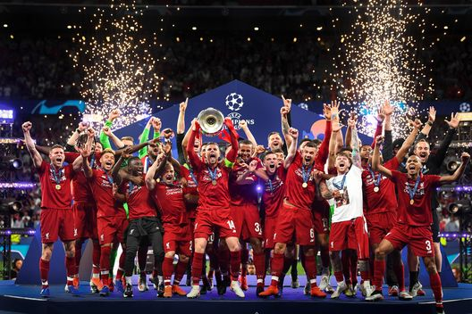

Liverpool FC
Le stagioni dal 2017 al 2025

Descrizione
Questo sito amatoriale, dedicato ai Reds, ripercorre la cavalcata del Liverpool verso i titoli dell'era Klopp, fino al primo campionato vinto con Arne Slot. Per ogni stagione, a partire dalla 2017/18, vengono mostrati l'andamento generale, i risultati nelle coppe e una breve panoramica del calciomercato.
Lo stadio: Anfield
Le stagioni


La coppa del 2019